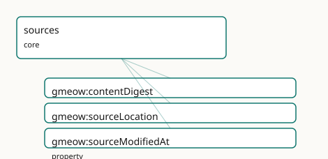

GMEOW Sources Module
- IRI: https://blackcatinformatics.ca/gmeow/slices/sources
- Tier: core
Group: core
What This Slice Covers
This slice owns 3 terms and contributes 12 mapping or projection rows. Use it when its terms match the native fact you want to preserve; use the linkage tables to see how those facts leave GMEOW for consumer vocabularies.
Dependencies
Consumers
- Content-addressed sources under the claim spine and the GTS packages (blake3 digests).
Local Map

Terms
Properties
| Term | Label | Definition |
|---|---|---|
gmeow:contentDigest |
content digest | A content hash of an object's bytes (e.g. "blake3:…", "sha256:…", "git:…") — the reliable identity by content (two objects with the same bytes are the same obj... |
gmeow:sourceLocation |
source location | Where the source artifact came from — a file path, original filename, or URL. Provenance/audit only; carries no reliable identity. |
gmeow:sourceModifiedAt |
source modified at | The last-modification time of the source artifact itself (e.g. a file mtime). A terminus-ante-quem on the recording of the claims this source carries — NOT val... |
Linkages
- Rows: 12
- Projection profiles:
codemeta,dcat,dcterms,oai_dc,schema-org,sioc - External vocabularies:
codemeta,dc,dcat,dcterms,rdf,schema,sioc,spdx
| Source | Kind | Profile | Predicate/Relation | Target | Evidence |
|---|---|---|---|---|---|
gmeow:sourceLocation |
equivalence | - |
skos:closeMatch | dcterms:source | gmeow-dublin-core.sssom.tsv; gmeow:eqDcTerms006; confidence 0.6 |
gmeow:sourceLocation |
equivalence | - |
skos:closeMatch | dcterms:source | gmeow-provenance.sssom.tsv; gmeow:eqProvenance011; confidence 0.6 |
gmeow:sourceLocation |
equivalence | - |
skos:closeMatch | schema:contentUrl | gmeow-properties.sssom.tsv; gmeow:eqProperties079; confidence 0.85 |
gmeow:sourceModifiedAt |
equivalence | - |
skos:closeMatch | dcterms:modified | gmeow-provenance.sssom.tsv; gmeow:eqProvenance010; confidence 0.9 |
gmeow:contentDigest |
projection | codemeta |
projects to / = | codemeta:identifier | gmeow:mapCodeMetaIdentifier; lossy: digest algorithm, multiple digests; only the string value survives |
gmeow:contentDigest |
projection | dcat |
projects to / <= | rdf:type, spdx:Checksum, spdx:checksum, spdx:checksumValue | gmeow:mapDcatChecksum; confidence 0.85; lossy: the algorithm prefix stays inline in spdx:checksumValue (no spdx:algorithm split) |
gmeow:sourceLocation |
projection | dcat |
projects to / <= | dcat:Distribution, dcat:distribution, dcat:downloadURL, rdf:type | gmeow:mapDcatDistribution; confidence 0.85; lossy: the member document is REUSED as the dcat:Distribution node (no manifestation split); its GMEOW typing is dropped |
gmeow:sourceLocation |
projection | dcat |
projects to / <= | dcat:Distribution, dcat:distribution, dcat:downloadURL, rdf:type | gmeow:mapDcatPartDistribution; confidence 0.8; lossy: generic parthood narrows to the dataset-distribution reading; non-distribution parts are over-typed |
gmeow:sourceLocation |
projection | dcterms |
projects to / = | dcterms:source | gmeow:mapDctermsSource; confidence 0.8 |
gmeow:sourceLocation |
projection | oai_dc |
projects to / = | dc:source | gmeow:mapOaiDcSource; confidence 0.8 |
gmeow:sourceLocation |
projection | schema-org |
projects to / <= | rdf:type, schema:DataDownload, schema:contentUrl, schema:distribution, schema:encodingFormat | gmeow:mapSchemaDataDownload; confidence 0.85; lossy: the member document is REUSED as the schema:DataDownload node; its GMEOW typing drops |
gmeow:sourceLocation |
projection | sioc |
projects to / <= | sioc:link | gmeow:mapSiocLink; confidence 0.85 |
Guide
Sources — carrier metadata and content-addressed identity
Slice:
https://blackcatinformatics.ca/gmeow/slices/sources· tier: core What a source artifact is — its bytes, its location, its clock — held apart from the claims it carries.
There is no gmeow:Source class, and that is the doctrine. The refactor
retired the anti-rigid Source Kind: being-a-source is not what a thing is but a role it
plays in an act of citation — source-hood is mediated by CitationAct (citations slice)
or borne as a SourceRole. Likewise the old Citation locator gave way to the
Selector/EvidenceSpan model (citations and evidence slices). What remains here is exactly
what is intrinsic to the artifact: carrier metadata — applied to the creative-works
Manifestation/Item tiers, never to the Work — and the content-digest identity discipline.
This slice is the Source root of the claim spine (Source → Chunk → EvidenceSpan →
Claim, Principle 14). The spine is content-addressed from the bottom: a source is
identified by what its bytes are (contentDigest), never by where they sit
(sourceLocation) or when the filesystem last touched them (sourceModifiedAt). The
same discipline carries the GTS packages — blake3 digests are the identity spine of the
signed, append-only memory format (Principle 14).
Carrier metadata
When a creative work is an import envelope — a file carrying a bundle of claims — these properties describe the artifact itself, never the claims inside it. Keeping the two apart is the whole point: an mtime says nothing about when a marriage happened or when a census taker wrote it down.
gmeow:contentDigest
A content hash of an object's bytes — "blake3:…", "sha256:…", "git:…" — the
reliable identity: two objects with the same bytes are the same object, regardless of
path, name, or mtime. Deliberately domain-free: creative works, source files, commits,
and distributions are all content-addressable (Principle 4: one identity mechanism, not
one per artifact kind). Not functional — an object may carry digests under several
algorithms, and they coexist.
gmeow:sourceModifiedAt
The last-modification time of the source artifact itself (a file mtime): a
terminus-ante-quem on the recording of the claims it carries — the upper bound that
feeds gmeow:recordedNoLaterThan in the temporal slice's four-clock model. It is NOT
valid-time and NOT observation-time; conflating the carrier's clock with the claims'
clocks is the classic provenance error this slice exists to forbid. Advisory and
resettable, hence not functional: copies of the same bytes legitimately report different
mtimes, and those reports coexist rather than force an inconsistency (Principle 9) — the
reliable identity stays contentDigest.
gmeow:sourceLocation
Where the artifact came from — a file path, original filename, or URL. Provenance and
audit only; it carries no identity. A file renamed is the same source; a path reused
is not the same source. Typically asserted on a Manifestation or Item alongside the
digest.
Bridges & solver boundary
The claims a source carries enter the graph through an ImportActivity (provenance
slice), which stamps the transaction clock; the evidentiary reach into the source —
which span supports which claim, with what warrant — is the evidence and citations
slices' machinery. Digest computation, dedup-by-digest, and mtime-vs-digest conflict
resolution are solver-layer computations, never assertions (Principle 12): the slice
records the digests and timestamps; deciding that two artifacts are byte-identical is a
projection-time join on contentDigest.
Dependencies
Depends on documents (the WEMI carrier tiers the metadata attaches to). Consumed by the
claim spine's content-addressed sources and by the GTS packages' blake3 identity spine
(Principle 14).